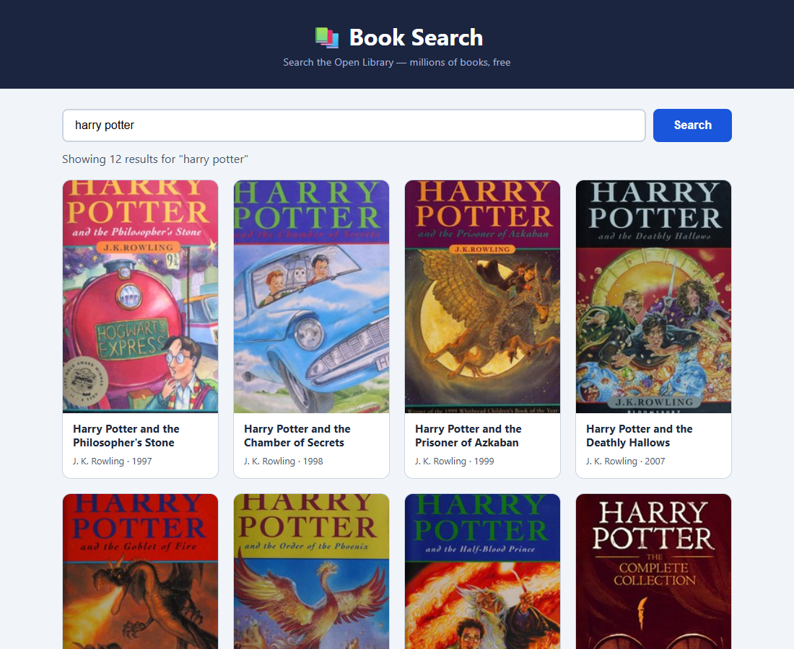

Homework · Deploy the Book Search App
Deploy the Book Search App from the Week 6–7 lab to its own public repo, webpro-book-search, with GitHub Pages.
Submission links
| Live URL | https://wongdf2006.github.io/webpro-book-search/ |
| GitHub repo | https://github.com/WONGDF2006/webpro-book-search |

Step 1–2 · Get the app and run the deployment checklist
The app is the finished lab version (Week 7 step 6), saved as index.html.
| Check | Result |
|---|---|
Absolute paths (href="/…", src="/…") | None |
Debug console.log | None. The one console.error logs real fetch failures, so it stays. |
| API keys or secrets | None: the Open Library API needs no key. |
| Works locally | Yes: a search for "harry potter" returned 12 books, no JavaScript errors. |
| Leftover lab text | Replaced the "Step 6" title and task comment with a real app title. |
Step 3–5 · Repo, push, and Pages
$ git init -b main
$ git add index.html
$ git commit -m "Deploy Book Search App"
e5a4b41 Deploy Book Search App
$ git remote add origin https://github.com/WONGDF2006/webpro-book-search.git
$ git push -u origin mainPages: Deploy from a branch → main / root. Live 40 seconds later.
Step 6 · Test the live URL in a fresh browser
Tested in a fresh Chrome profile with no cache, as the guide asks for a private window:
| Search "harry potter" | 12 results, 11 with covers, no JavaScript errors |
| Lighthouse performance (mobile) | 98 |
| Lighthouse accessibility (desktop) | 95 → 100 after one fix |
The accessibility check found the footer text too faint: #64748b on #f1f5f9 measured 4.34 : 1, under the 4.5 : 1 minimum.
Darkening it to #475569 (6.92 : 1) was a second commit, 9318468. The live site re-tested at 100.